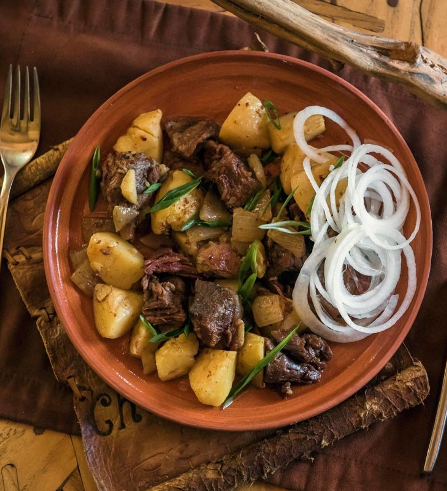

Lagman ingredients
- 15 ml oil / originally used more than 100ml
- 500 g beef & lamb / They often use lamb, beef and horse meat
- 3/4 onions / sliced
- 4 potatoes / bite size
- 15 g garlic
- 100 ml water / depends on the cookware
- Free salt & pepper
- 1/4 onion / sliced
- Free green onions / options
Directions, by steps:
- Cut the meat into bite size pieces. Heat oil. Fry the meat.
- Add onions and potatoes. Saute.
- Add garlic and water. Cover and simmer on low heat. Until you like it.
- Season with salt and pepper to taste. Place on a plate.
- Garnish with onions and green onions. Finish.
To main page